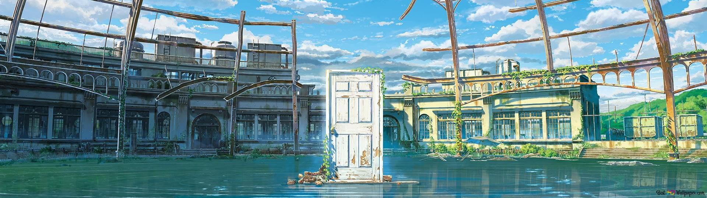

Welcome to the World of Anime
Japanese animation, known globally as "anime," has transcended its humble origins to become a dominant and influential force in worldwide pop culture. Unlike traditional Western cartoons, which have historically been aimed primarily at children with simple, episodic narratives, anime encompasses a vast and diverse spectrum of genres. From heart-pounding action and psychologically complex thrillers to sweeping historical romances and slice-of-life dramas, it offers deep character development and intricate world-building that appeals to audiences of absolutely all ages and backgrounds. It is not just a style of animation, it is a medium capable of telling any kind of story imaginable.
This website was specifically created to serve as your comprehensive gateway into this fascinating universe. Whether you are a seasoned "otaku" with hundreds of shows under your belt looking to explore the history of legendary studios, or a complete newcomer wondering where to begin your journey, you will find valuable information here. I invite you to use the navigation menu above to explore the different sections: discover the "Big Three" that changed the global landscape, learn the terminology, and perhaps find your next obsession in our carefully curated recommendations list. Welcome aboard!